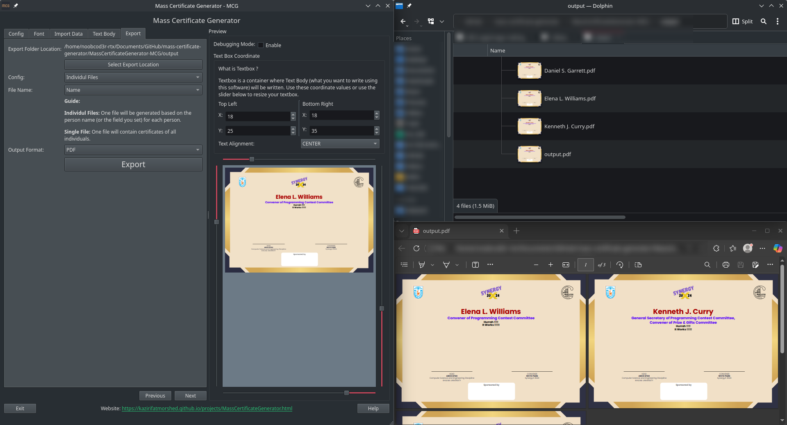
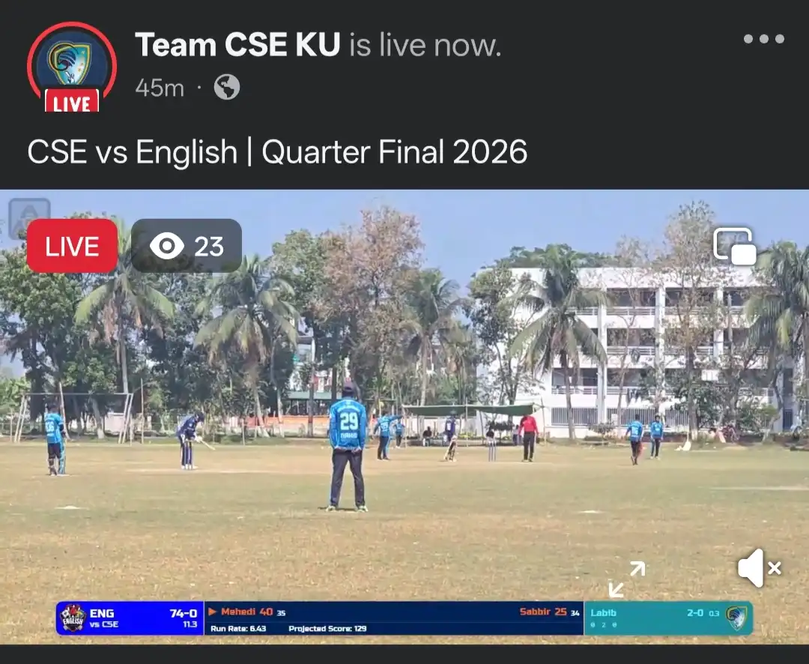
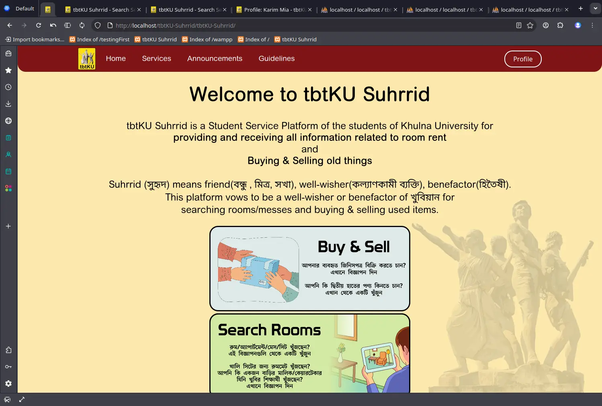
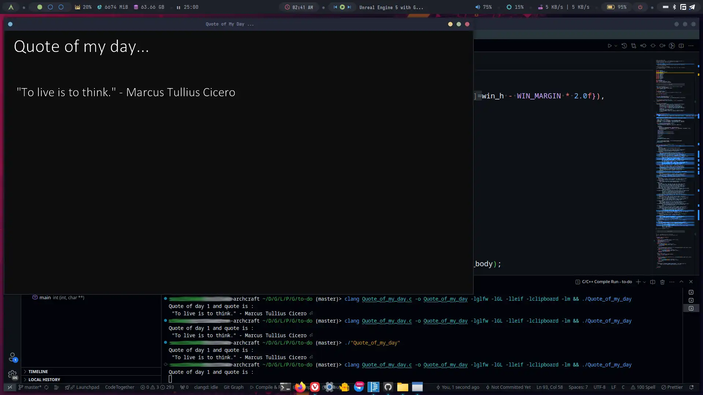
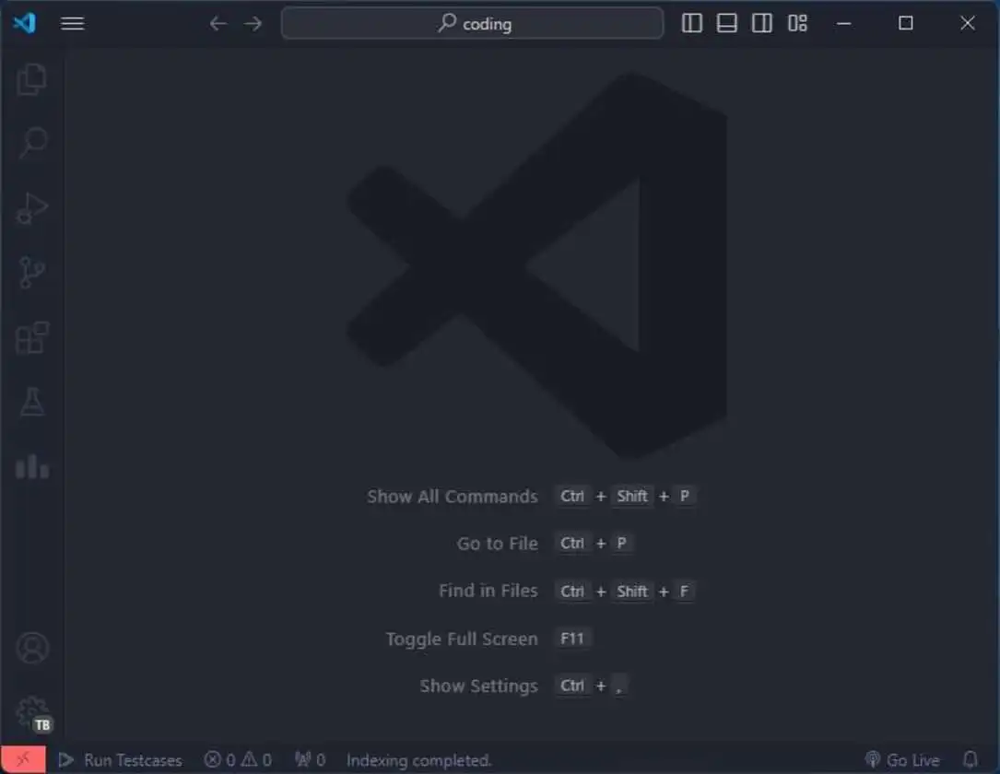

Projects Showcase
A collection of some of my software development projects, tools, and configurations.


SportoStream
A custom-built sports streaming and scoring system software for Team CSE KU to live-stream cricket matches with a dedicated scoring overlay.

tbtKU Suhrrid (সুহৃদ)
A Student Service Platform for Khulna University students to find accommodations and buy/sell used items among peers.

